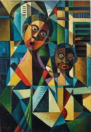
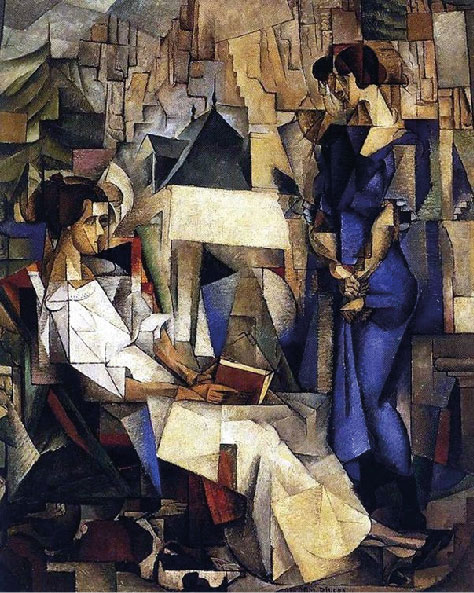
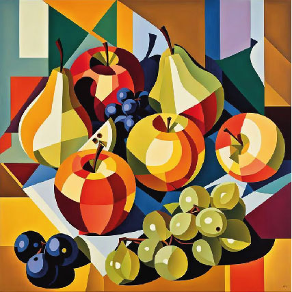
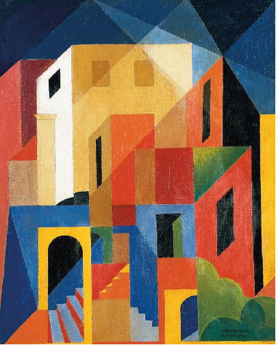
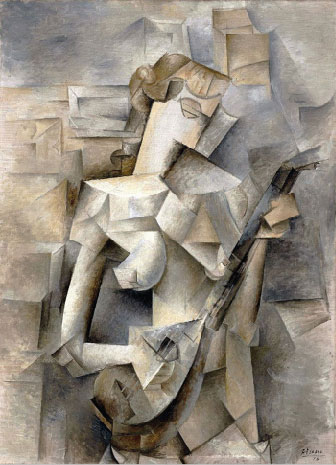

Bienvenidos al Cubismo

Bienvenidos al Cubismo
El Cubismo fue un movimiento artístico que transformó para siempre la manera de entender la pintura y la representación visual. Surgido en París a comienzos del siglo XX, rompió con la perspectiva tradicional y propuso una nueva forma de ver el mundo: fragmentando la realidad en formas geométricas y mostrando múltiples puntos de vista en una misma obra.
Este sitio está dedicado a explorar la historia, los artistas y las obras más emblemáticas del Cubismo, así como su influencia en el arte moderno y contemporáneo. Aquí encontrarás información clara, ejemplos visuales y recursos interactivos que te permitirán comprender por qué el Cubismo es considerado una de las vanguardias más revolucionarias de la historia del arte.
El Cubismo no solo fue una técnica artística, sino también una forma de pensar y de cuestionar la realidad. Al descomponer los objetos en planos y perspectivas múltiples, los artistas buscaban mostrar que la verdad no es única ni fija, sino que depende de cómo se la mire. Esta visión revolucionaria abrió las puertas a nuevas formas de expresión y marcó el inicio de las vanguardias del siglo XX, influyendo en la pintura, la escultura, la arquitectura y hasta en el diseño gráfico contemporáneo.
Preguntas Frecuentes
-
¿Cuándo surge el Cubismo?
El Cubismo surge a comienzos del siglo XX, alrededor de 1907.
-
¿Quiénes fundaron el Cubismo?
Pablo Picasso y Georges Braque son considerados sus fundadores.
¿Entre qué años surgió el Cubismo?
Entre 1907 y 1914, antes de la Primera Guerra Mundial.
¿Qué características distinguen al Cubismo?
Fragmentación de la realidad, uso de formas geométricas, múltiples perspectivas y paleta sobria.
-



